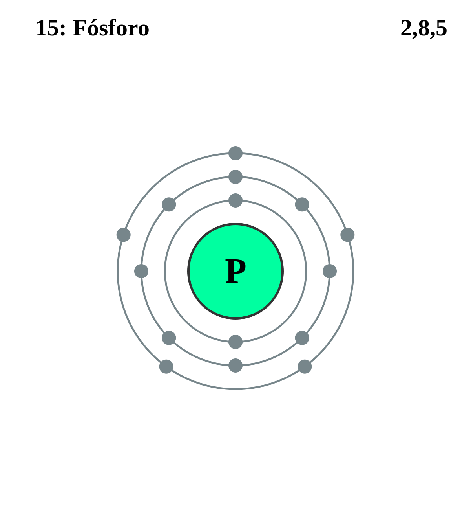

|
|
||
|
FOSFORO El fósforo es un sólido de color blanco ceroso y es incoloro y transparente en estado puro. Es insoluble en agua, soluble en sulfuro de carbono y se inflama espontáneamente en contacto con el aire. El fósforo es tóxico y tan solo 50 mg corresponden a una dosis letal. Los ácidos fosfóricos concentrados son importantes para la agricultura y los cultivos como componentes de fertilizantes. También se usan para producir cristales especiales, porcelana fina y levadura química. |
 |
DATOS Número Atómico: 15 Peso Atómico: 30.97 Electronegatividad: 2.19 Configuración Electrónica: [Ne]3s23p3 Estados de Oxidación: -3 No. de Electrones de Valencia: 5 |